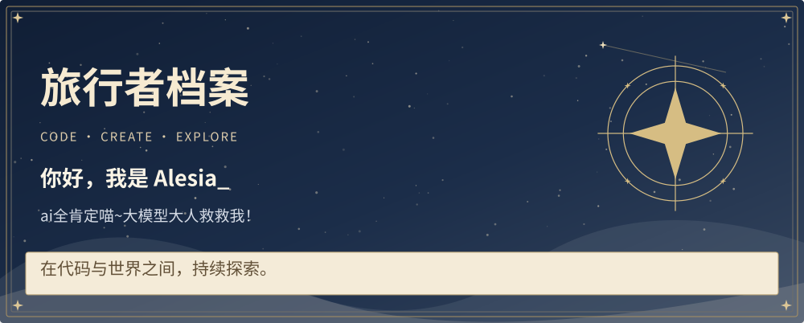
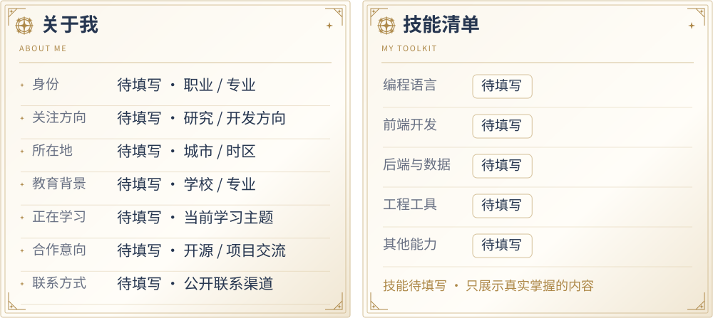
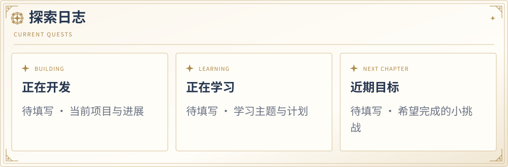
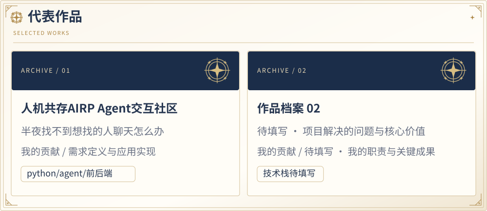
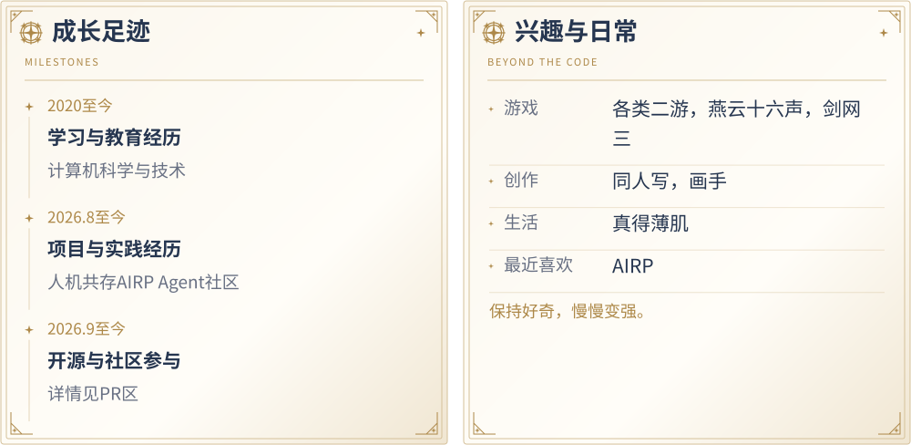
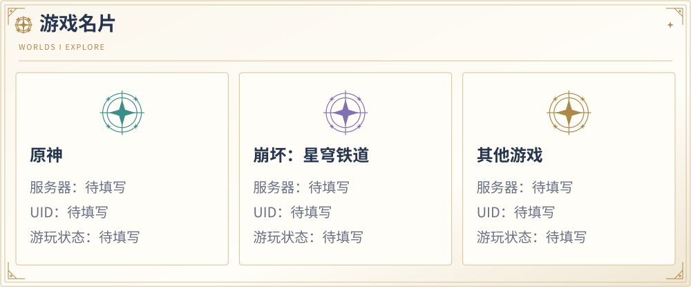
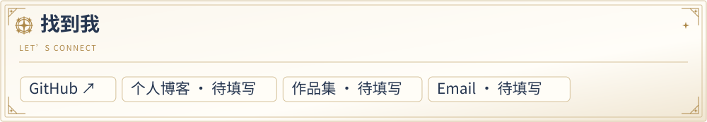

Alesia0411 / README.md







✦ 正在学习，也在冒险 ✦
文字版档案 · 复制 UID / 查看全部信息
Alesia_ · @Alesia0411
ai全肯定喵~大模型大人救救我！
关于我
- 身份：硕士在读
- 关注方向：AI
- 所在地：无处不在喵
- 教育背景：HFUT计科
- 正在学习：AI Agent
- 合作意向：任何都欢迎喵
- 联系方式：1151127235@qq.com
技能清单
- 编程语言：待填写
- 前端开发：待填写
- 后端与数据：待填写
- 工程工具：待填写
- 其他能力：待填写
- 技能待填写 · 只展示真实掌握的内容
探索日志
- 正在开发：待填写 · 当前项目与进展
- 正在学习：待填写 · 学习主题与计划
- 近期目标：待填写 · 希望完成的小挑战
代表作品
- 作品档案 01：待填写 · 项目解决的问题与核心价值；我的贡献：待填写 · 我的职责与关键成果；技术栈：技术栈待填写
- 作品档案 02：待填写 · 项目解决的问题与核心价值；我的贡献：待填写 · 我的职责与关键成果；技术栈：技术栈待填写
成长足迹
- 待填写 · 学习与教育经历 — 记录学习方向与重要收获。
- 待填写 · 项目与实践经历 — 记录参与的项目与承担的职责。
- 待填写 · 开源与社区参与 — 记录开源贡献与社区交流。
兴趣与日常
- 游戏：待填写 · 喜欢的游戏与玩法
- 创作：待填写 · 写作 / 绘画 / 摄影
- 生活：待填写 · 音乐 / 阅读 / 运动
- 最近喜欢：待填写 · 最近的新发现
- 保持好奇，慢慢变强。
游戏名片
- 原神｜服务器：待填写｜UID：待填写｜游玩状态：待填写
- 崩坏：星穹铁道｜服务器：待填写｜UID：待填写｜游玩状态：待填写
- 其他游戏｜服务器：待填写｜UID：待填写｜游玩状态：待填写
找到我
- GitHub：https://github.com/Alesia0411
- 个人博客：待填写
- 作品集：待填写
- Email：待填写
正在学习，也在冒险